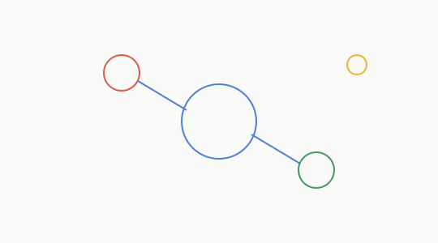

ローカルLLMエージェント
自分のGPU上で動くリサーチ用エージェントと、その検証（自己検証・根拠確認）の仕組み作り。
詳細東京大学 教養学部 学際科学科 3年の田中 クナール（Kunal Tanaka）です。総合文化研究科の馬場研究室に所属しています。物理・数学（代数的整数論、統計的推論）に関心があり、Lean による形式証明や、ローカル環境で動かす大規模言語モデルの実験を行っています。
科学コミュニケーション団体 CAST（19期）で科学を伝える活動をしながら、RIT でマーケティングのインターンをしています。科学教育と、数学・計算機を使った探究の両方に取り組んでいます。

自分のGPU上で動くリサーチ用エージェントと、その検証（自己検証・根拠確認）の仕組み作り。
詳細Lean 4 + Mathlib で数学の証明を形式化する学習と、エディタ上の証明状態表示ツール。
詳細大規模言語モデルの内部特徴（SAE）をリアルタイムに可視化する実験。
詳細分子構造と匂いの対応を機械学習で扱う研究。進捗報告をまとめている。
詳細Wait to see!